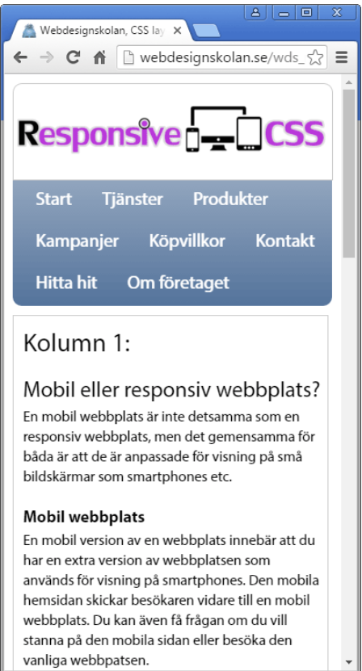
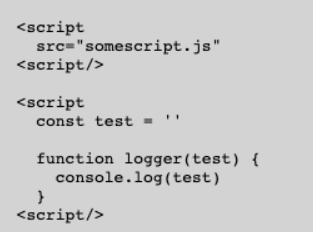

HTML element är komponenter som används för att bygga upp sidor. De kallas ibland för "taggar" och finns för att skapa struktur i HTML-dokument.
HTML är ett märkesspråk som definierar information genom att se dess syfte. Webbläsaren använder sig av HTML för att veta var information skall visas på skärmen. HTML är strukturen för internets sidor.
Id används för att identifiera element på sidor. Ett id är unikt, vilket innebär att det endast kan vara ett element som har ett har det id't. Det är även använt i JavaScript för att ändra element med ett visst id.
Class liknar ID. Skillnaden är att classer klassificerar elementen, vilket innebär att det kan finnas flera element med samma class. Detta innebär att man kan ha grupper med olika classer och då lätt med css ändra alla elementen för inte inte inviduellt ändra varje element.
Meta är information som beskriver en sidas innehåll. Meta beskrivningen syns inte på sidan utan ändast i sidans kod. Sökmotorer använder sig av meta för att berätta vad sidan handlar om.
Detta betyder att sidan anpassar sig till användaren. Exempel är menyerna ser olika ut beroende på om användaren använder sig av en dator eller mobiltelefon.
Dator skärm: Mobil skärm: 
Http står för "HyperText Transfer Protocol" och är kort sagt regler för hur en kommunikation mellan två enheter skall gå till. Används i webbläsaren för att hämta information från webbservrar.
Https är nästan samma sak som Http. Skillnaden är s:et som står för "Secure". Detta innebär att när man är inne på en sida med Http så kan sidorna läsa av ens information, men har man Https är informationen krypterad.
DNS är en katalogtjänst som ändrar IP-adresser till domännamn. Detta för att göra det lättare för oss användare att hitta. DNS är en hierarkisk databas, vilket innebär att information lagras i en trädstruktur och detta leder till att det är lättare att hitta den information man vill ha.
CDN eller "Content Delivery Network". CDN hanterar bilder, ljud och videos på sidor för att avlasta servern. Detta gör man för att öka prestandan och minska fördröjning.
Compressed data eller komprimerad data innebär att man har omkodat datan för att minska antal informationsbärande enheter. Detta används exempelvis för att spara på lagringsutrymme på sin dator.
Local bootstrap eller lokal bootstrap innebär att man använder bootstrap från sin dator och inte från nätet. Detta gör man genom att ladda ner bootstrap och sedan lägga in det i sitt projekt och sedan länka till den. Detta betyder att man laddat ner alla classer och css på sin dator och kan då använda det i offline.
JQuery är ett Java-bibliotek. Detta bibliotek är tänkt att snabba på processen att modifiera(HTML, CSS och DOM), animera och AJAX. JQuery är idag det populäraste Java-biblioteket.
Flexbox är en webblayoutmodell som används för att kunna placera element i en container och placera ut den på sidan var man vill. Man kan även med flexbox se till att sidan ändras beroende på skärmstorlek.
Grid är som flexbox. Skillnaden är att Flexbox kan endast ordna sina element horisontellt, men Grid ger oss möjligheten att även ordna vertikalt. 
Code snippets är ett block med text som gör det lättare att använda upprepande kod mönster. Exempel är olika sorters loopar eller vilkorssatser.
WASM eller "WebAssembly" är ett portabelt binärkodformat och ett textformat för körbar kod. WASM används för att ge högpresterande applikationer på webbsidor. Det används även för att underlätta interaktion mellan program och värdmiljö genom att ändra mjukvarugränssnittet.
Chromium är en webblärase som liknar Google Chrome. Webbläsaren är uppbygd av den öppna källkoden som Google Chrome, Microsoft Edge och Torch har, vilket innebär att det finns likheter till dem i Chromium. Chromium har samma funktioner som Google Chrome, men har inte användningsspårning eller autouppdateringar. Gränssnittet är skapat för att vara minimaliskt och snabbt.
Svg är ett bildformat för tvådimensionella bilder och är en öppen standard. Den stödjer även att bilderna har animationer och är interaktiva. En fördel med svg-bilder är att deras egenskaper defineras i XML-textfiler, vilket innebär att man kan skapa och redigera dem med vilken textredigerare som helst.
Png24 är en typ av png. Det finns två typer av png vilket är png24 och png8. Png är ett bildformat som står för "Portable Network Graphics". Skillnaden mellan png8 och png24 är att png8 kan endast visa 256 färger medans png24 kan vi miljontals olika färger. Skillnaden är också att png24 tar upp mer lagring, men man kan också spara om en png24 bild hur många gånger man villutan att kvaliten försämras.